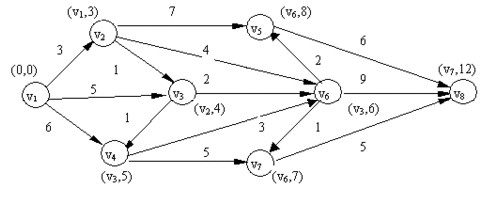

4.最短路径
在许多应用领域，带权图都被用来描述某个网络，比如通信网络、交通网络等。这种情况下，各边的权重就对应于两点之间通信的成本或交通费用。
此时，一类典型的问题就是：在任意指定的两点之间如果存在通路，那么最小的消耗是多少。这类问题实际上就是带权图中两点之间最短路径的问题。
问题：计算V1到V8的最短路径

最短路径1：段数最少的最短路径：换乘最少 使用广度优先遍历即可
类似问题：编写国际象棋AI，计算最少走多少步就可获胜
根据你的人际关系找到关系最近的医生
类似于数的层次遍历，需要借助于队列来实现
对于已经检查过结点，应该标记为已检查，且不再检查它。否则可能会导致无限循环。可以使用另外一个列表存放已经检查过的结点
如果到最后队列为空，标明没有路径可以到达
最短路径2：权值最小的最短路径：时间最少，距离最短 使用狄克斯特拉算法